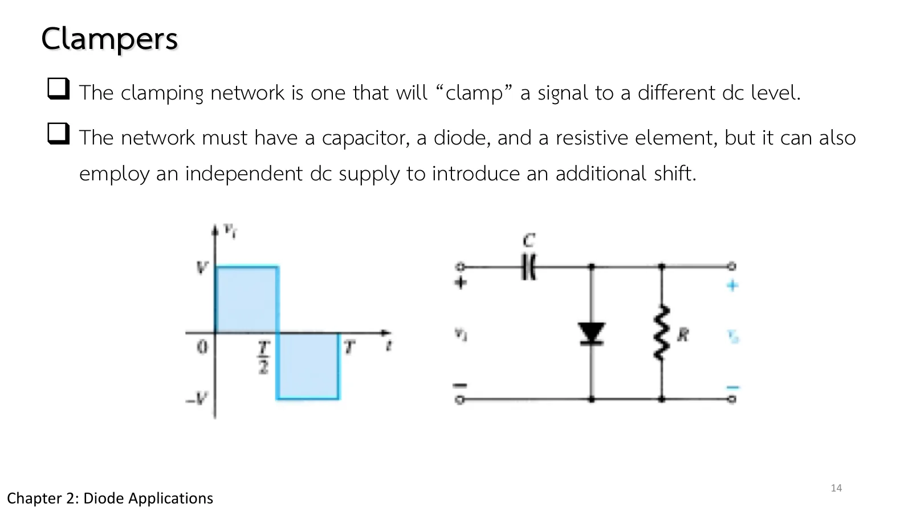
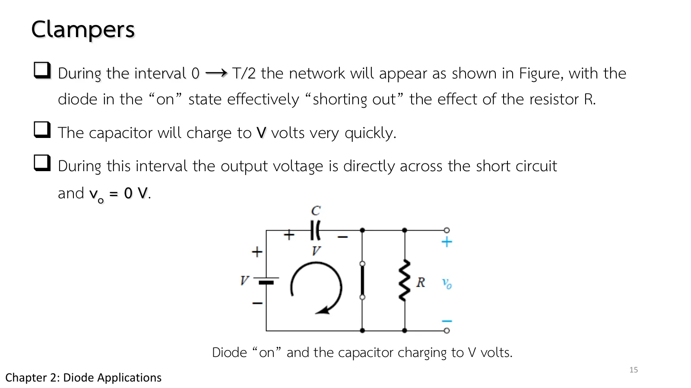
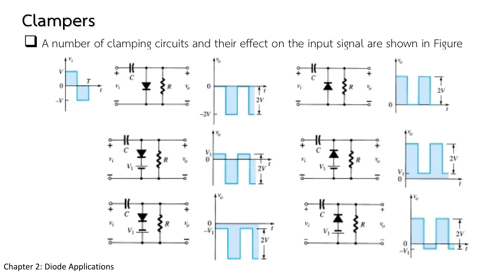
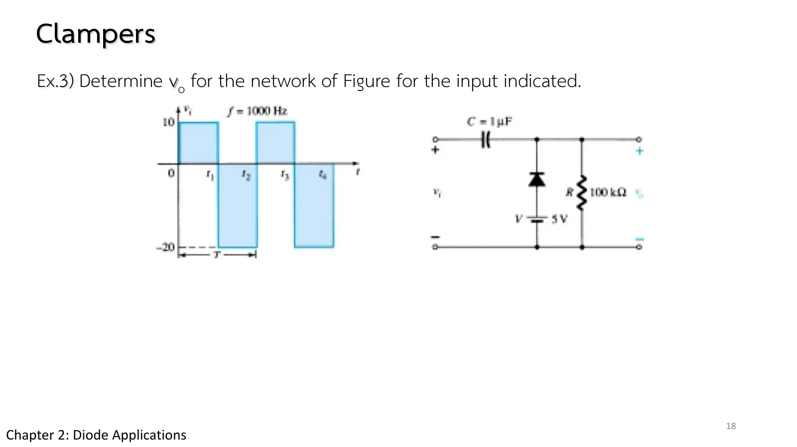
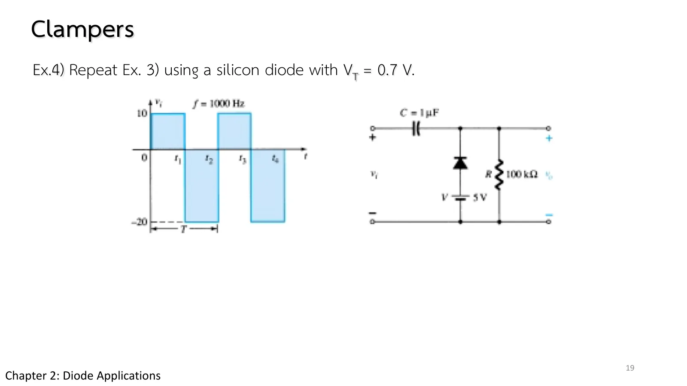

วงจรยึดระดับสัญญาณ Clampers
Clampers Shifting a signal to a new dc level
สไลด์ชุดที่ 2 หน้า 14–20 ใช้ตัวเก็บประจุ ไดโอด และตัวต้านทาน "ยึด" (clamp) สัญญาณไว้ที่ระดับกระแสตรงใหม่ รูปคลื่นไม่เปลี่ยน แต่ถูกเลื่อนขึ้นหรือลงทั้งก้อน แหล่งจ่ายกระแสตรงที่ต่อเพิ่มให้เลื่อนได้มากขึ้น วงจรนี้มีหน่วยความจำ (ประจุในตัวเก็บประจุ) จึงต้องจำลองตามเวลาจริง หน้านี้มีภาพจำลองตามเวลาที่ช้าลง 4000 เท่า (ส่วน A) โจทย์ Ex.3 และ Ex.4 และแบบฝึกเพิ่ม
Part II slides pp. 14–20 use a capacitor, a diode and a resistor to "clamp" a signal to a new dc level: the waveform keeps its shape but moves up or down as a whole, and an added dc supply moves it further. The circuit has a memory (the charge on the capacitor), so it is simulated as a real transient. This page slows time down 4000 times (section A), works Ex.3 and Ex.4, and ends with more practice.
ประเด็นสำคัญของหน้านี้
- วงจรยึดระดับสัญญาณต้องมีตัวเก็บประจุ ไดโอด และตัวต้านทาน อาจมีแหล่งจ่ายกระแสตรงเพิ่มเพื่อเลื่อนระดับมากขึ้น (สไลด์ชุดที่ 2 หน้า 14)
- ช่วงที่ไดโอดนำ: ไดโอดลัด R ออกไป ตัวเก็บประจุชาร์จจนถึงแรงดันที่วงจรกำหนดแทบทันที (สไลด์ชุดที่ 2 หน้า 15)
- ช่วงที่ไดโอดไม่นำ: ตัวเก็บประจุคายประจุผ่าน R ด้วยค่าคงตัวเวลา \(\tau = RC\) ถ้า \(5\tau\) ยาวกว่าครึ่งคาบมาก ตัวเก็บประจุแทบรักษาแรงดันไว้ได้ทั้งช่วง (สไลด์ชุดที่ 2 หน้า 16)
- ขั้นตอนและการตรวจ: เริ่มจากช่วงที่ขาเข้าไบแอสตรงไดโอด หา \(V_C\) แล้วหา \(v_o\) ในช่วงที่ไดโอดไม่นำ ระวังขั้วของ \(v_o\) และสวิงของขาออกต้องเท่ากับสวิงของขาเข้าเสมอ (สไลด์ชุดที่ 2 หน้า 17)
Key points of this page
- A clamper needs a capacitor, a diode and a resistor, and may add a dc supply for a further shift (Part II slide p. 14).
- While the diode conducts it shorts R out, and the capacitor charges almost at once to the voltage the network sets (Part II slide p. 15).
- While the diode is off the capacitor discharges through R with the time constant \(\tau = RC\); if \(5\tau\) is much longer than half a period, it holds its voltage practically the whole time (Part II slide p. 16).
- Steps and a check: start with the part of the input that forward-biases the diode, find \(V_C\), then \(v_o\) while the diode is off; watch the polarity of \(v_o\), and remember that the output swing always equals the input swing (Part II slide p. 17).

![Part II slide 17, Clampers: in general, the following steps may be helpful when analyzing clamping networks: start by considering that part of the input signal that will forward bias the diode; during the period that the diode is in the on state, assume that the capacitor will charge up instantaneously to a voltage level determined by the network; assume that during the period when the diode is in the off state the capacitor will hold on to its established voltage level; throughout the analysis maintain a continual awareness of the location and reference polarity for v_o; keep in mind the general rule that the total swing of the total output must match the swing of the input signal.](slides/ch2b/p17.webp)
วงจรยึดระดับสัญญาณตามเวลาจริง
A clamper as a real transient

![Part II slide 16, Clampers: when the input switches to the −V state, the network appears as shown, with the open-circuit equivalent for the diode determined by the applied signal and the stored voltage across the capacitor, both pressuring current through the diode from cathode to anode. R is back in the network; the time constant determined by the RC product is sufficiently large to establish a discharge period 5τ much greater than the period T/2 to T. The equation: −V − V − v_o = 0, v_o = −2V. Caption: determining v_o with the diode off.](slides/ch2b/p16.webp)

ขาเข้าเป็นคลื่นสี่เหลี่ยม 1 kHz (1 คาบใช้ 4 วินาทีในภาพจำลอง) แถบสีบนตัวเก็บประจุแสดงประจุ กราฟแสดงสองคาบล่าสุดเหมือนออสซิลโลสโคป: \(v_i\) (ฟ้า) \(v_o\) (เหลือง) และ \(v_C\) (ม่วง) ตอนเริ่ม C ไม่มีประจุ จึงเห็นครึ่งคาบแรกที่ยังไม่ยึดระดับ ลองเลือก R = 1 kΩ ซึ่ง \(\tau = RC\) = 1 ms เท่ากับคาบ: ตัวเก็บประจุคายประจุมากระหว่างพัลส์ ขาออกจึงผิดรูป
The input is a 1 kHz square wave (one period takes 4 s in the simulation); the colour on the capacitor shows its charge. The graph shows the last two periods, as on an oscilloscope: \(v_i\) (blue), \(v_o\) (yellow) and \(v_C\) (purple). C starts empty, so the first half period is not yet clamped. Try R = 1 kΩ, where \(\tau = RC\) = 1 ms equals the period: the capacitor discharges a lot between pulses and the output is distorted.
Ex.3: วงจรยึดระดับกับแบตเตอรี 5 V
Ex.3: a clamper with a 5 V battery

ขาเข้าเป็นคลื่นสี่เหลี่ยม 1000 Hz ระดับ +10 V และ −20 V ผ่าน C = 1 µF ไปยังจุดขาออก ซึ่งมีไดโอดอุดมคติ (แคโทดที่จุดขาออก แอโนดที่ขั้วบวกของแบตเตอรี 5 V) และ R = 100 kΩ ต่อลงกราวด์ จงหา \(v_o\)
A 1000 Hz square wave of +10 V and −20 V drives, through C = 1 µF, the output node, which has an ideal diode (cathode on the output, anode on the + terminal of a 5 V battery) and R = 100 kΩ to ground. Determine \(v_o\).
ภาพจำลองนี้คำนวณตามเวลาจริง ครึ่งคาบแรก C ยังไม่มีประจุ ลองตอบก่อน
This simulation is a real transient; in the first half period C is still empty. Try it first.
Ex.4: วงจรเดิมกับไดโอดซิลิคอน
Ex.4: the same circuit with a silicon diode

ทำ Ex.3 ซ้ำโดยใช้ไดโอดซิลิคอน \(V_K = 0.7\) V
Repeat Ex.3 with a silicon diode, \(V_K = 0.7\) V.
เทียบผลกับข้อ 1: ทุกระดับลดลง 0.7 V แต่สวิงยังเท่าเดิม ลองตอบก่อน
Compare with problem 1: every level drops by 0.7 V, yet the swing is unchanged. Try it first.
ฝึกเพิ่ม
More practice
ลองทำดู 1 — ตัวเก็บประจุทำงานอย่างไร
- ส่วน A กด "เริ่มใหม่" แล้วดูครึ่งคาบแรก: C ยังว่าง ไดโอดไม่นำ \(v_o = v_i\) พอขาเข้าลงไป −20 V ไดโอดนำ C ชาร์จถึง 25 V ทันที แล้วขาออกถูกยึดระดับตั้งแต่นั้น
- เลือก R = 1 kΩ: ระหว่างช่วง +10 V ขาออกลดลงอย่างเห็นได้ชัด เพราะ \(\tau\) = 1 ms ไม่ยาวกว่าครึ่งคาบมาก
- กลับทิศไดโอด: ขาออกถูกยึดด้านบนแทนด้านล่าง
ลองทำดู 2 — สวิงเท่าเดิม
- เปลี่ยนแบตเตอรีจาก +5 V เป็น 0 V และ −5 V: ขาออกเลื่อนตามทั้งก้อน แต่ระยะจากยอดถึงยอดยังเท่ากับ 30 V
- ชี้เมาส์ที่ตัวเก็บประจุ: แรงดันคร่อม C แทบคงที่ ส่วนที่เปลี่ยนตามขาเข้าคือขาออก
Try this 1 — what the capacitor does
- In section A press "Start again" and watch the first half period: C is empty and the diode off, so \(v_o = v_i\). As soon as the input drops to −20 V the diode conducts, C charges to 25 V at once, and the output is clamped from then on.
- Choose R = 1 kΩ: during the +10 V half the output sags visibly, because \(\tau\) = 1 ms is not much longer than half a period.
- Turn the diode round: the output is clamped at the top instead of the bottom.
Try this 2 — the same swing
- Change the battery from +5 V to 0 V and to −5 V: the output moves as a whole, but its peak-to-peak span stays 30 V.
- Hover over the capacitor: its voltage is nearly constant; it is the output that follows the input.